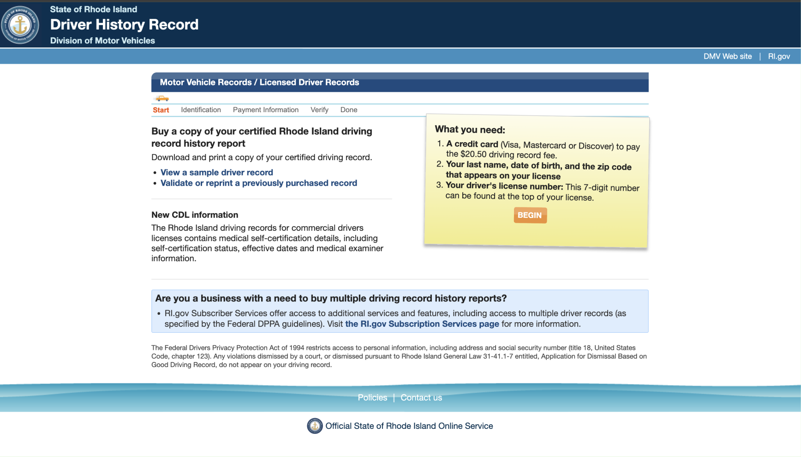
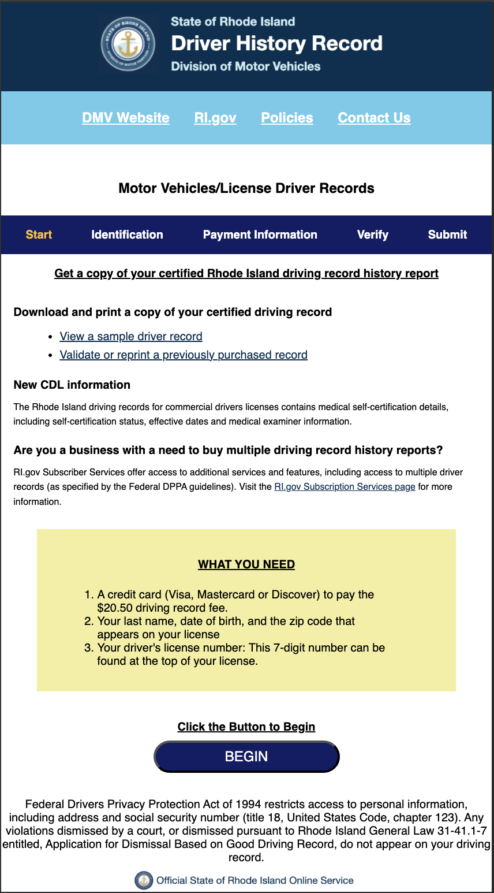
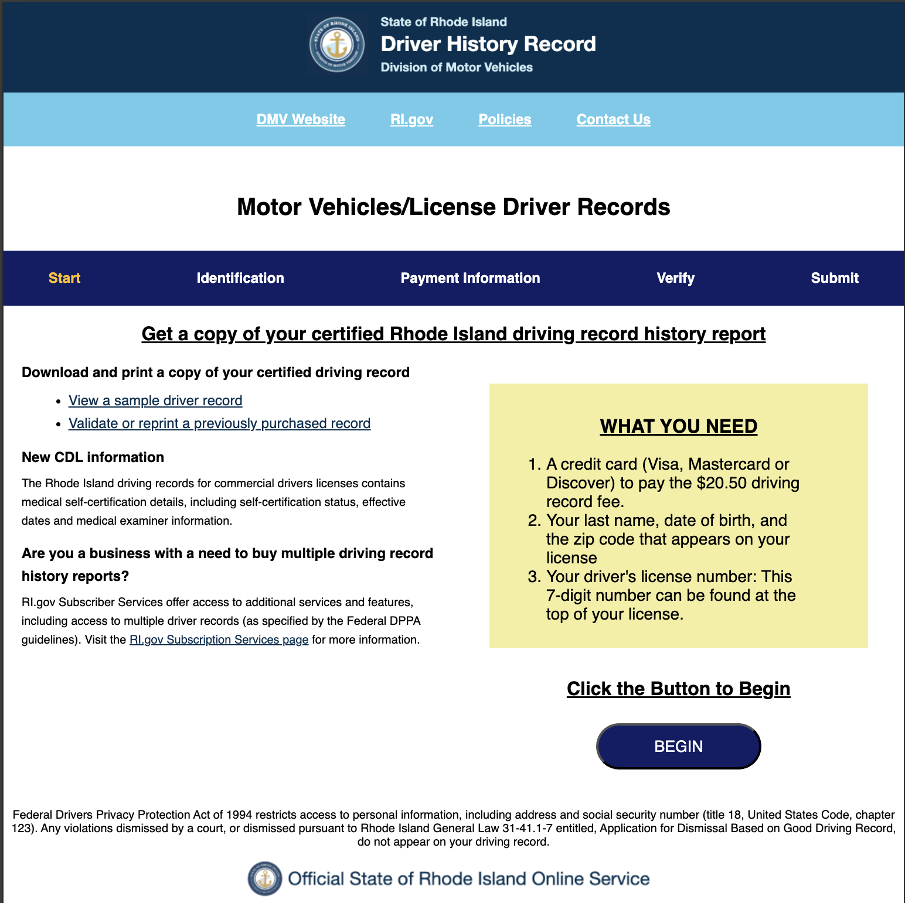

Responsive
&&
Redesign

Overview
Self-Checkout Machines
- Objective: Identify key UX and accessibility flaws in a live government webpage.
- Methodology: Used usability heuristics, WebAIM WAVE scanner, and annotated critique.
- Outcome: Delivered responsive redesign with full screen-size support and accessibility improvements.
Identified Issues
- Weak visual hierarchy makes it hard to find primary actions.
- Poor contrast and missing semantic elements hinder accessibility.
- Text-heavy layout without clear guidance for beginners.
- Non-responsive layout breaks on mobile devices.
Visual Redesign & Style Guide
Using Figma, I developed a consistent UI system including colors, typography, and responsive layouts across devices. Here is the (Figma Link)
Annotated Mockups
Mobile
Tablet
Desktop

Responsive Redesign
This page was implemented manually in HTML and CSS using flexbox and media queries. Try resizing!
Live Demo